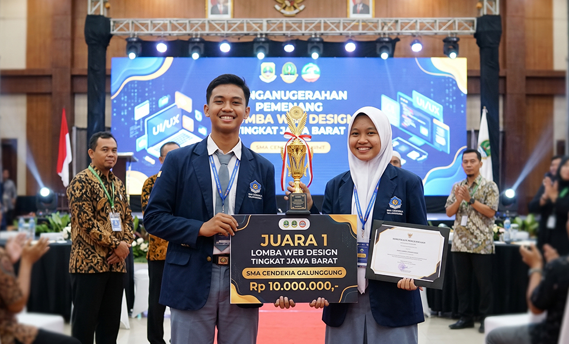

Prestasi

Siswa SMA Cendekia Galunggung Raih Juara 1 Lomba Web Design Tingkat Jawa Barat
Tim ekstrakurikuler Web & Informatika sukses mengharumkan nama Kota Tasikmalaya dalam ajang kompetisi inovasi digital tingkat provinsi.
Baca Selengkapnya →